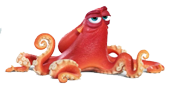

-
 Пирск - син Краша. Перейняв його манеру мови на молодіжному сленгу.
Пирск - син Краша. Перейняв його манеру мови на молодіжному сленгу. -
 Немо - син Марлина, допитливий і рухливий. Один з його плавників недорозвинений.
Немо - син Марлина, допитливий і рухливий. Один з його плавників недорозвинений. -
 Дорі - блакитний хірург, балакуча, наївна і цілеспрямована. Страждає на тяжку форму склерозу з дитинства, але найважливіше все ж пам'ятає.
Дорі - блакитний хірург, балакуча, наївна і цілеспрямована. Страждає на тяжку форму склерозу з дитинства, але найважливіше все ж пам'ятає. -
Тед - восьминіг-грімпотевтіс, батько Блискітки.
У пошуках...
НЕМО